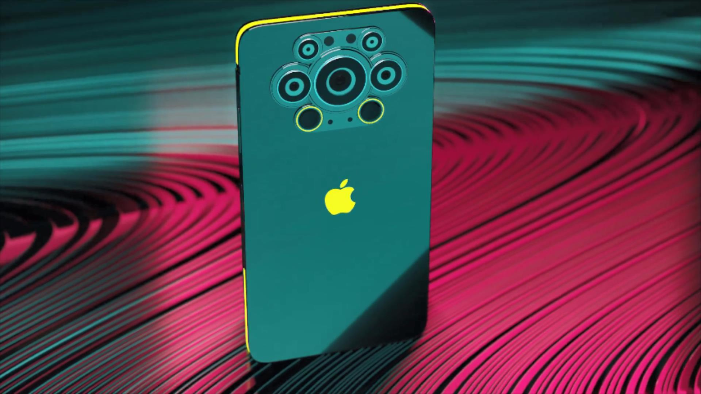

BLOG
Apple introduces iPhone 13 and iPhone 13 mini, delivering breakthrough camera innovations and a powerhouse chip with an impressive leap in battery life
Featuring a sleek and durable design, an advanced new dual-camera system for improved photos and videos in low light, and introducing Cinematic mode
CUPERTINO, CALIFORNIA Apple today introduced iPhone 13 and iPhone 13 mini, the next generation of the world’s best smartphone, featuring a beautiful design with sleek flat edges in five gorgeous new colors. Both models feature major innovations, including the most advanced dual-camera system ever on iPhone — with a new Wide camera with bigger pixels and sensor-shift optical image stabilization (OIS) offering improvements in low-light photos and videos, a new way to personalize the camera with Photographic Styles, and Cinematic mode, which brings a new dimension to video storytelling. iPhone 13 and iPhone 13 mini also boast super-fast performance and power efficiency with A15 Bionic, longer battery life, a brighter Super Retina XDR display that brings content to life, incredible durability with the Ceramic Shield front cover, double the entry-level storage at 128GB, an industry-leading IP68 rating for water resistance, and an advanced 5G experience.
Major battery life improvements come to both iPhone 13 and iPhone 13 mini, made possible by A15 Bionic, more efficient components, a larger battery, and power optimizations from a deep integration of hardware and software. iPhone 13 delivers incredible all-day battery life,4 offering up to two and a half more hours in a day than iPhone 12, and iPhone 13 mini provides up to an hour and a half more in a day than iPhone 12 mini.
The Most Advanced Dual-Camera System in iPhone
iPhone 13 and iPhone 13 mini represent a massive leap in camera design with advancements in hardware and computational photography that deliver stunning photos and videos. The new Wide camera, with 1.7 µm pixels, comes with the biggest sensor ever in an iPhone dual-camera system and is capable of gathering 47 percent more light for less noise and brighter results. Sensor-shift OIS — a technology introduced in iPhone 12 Pro Max and not found in any other smartphone — also comes to the Wide camera, even in the more compact iPhone 13 mini. It stabilizes the sensor instead of the lens so shots are more steady, while the custom-designed Ultra Wide camera with a new sensor captures images with more detail in the dark areas of photos and videos with less noise.